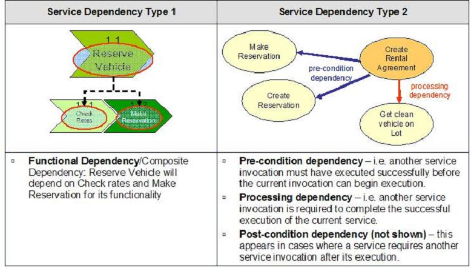
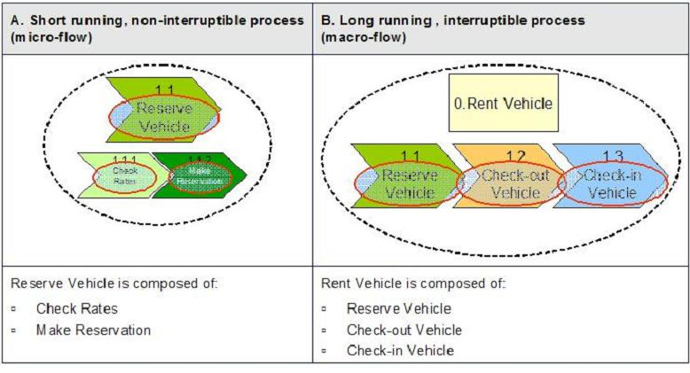

| Artifact: Service Dependencies (ART 0584) |
 |
|
The purpose of the Service Dependencies is to capture dependencies that exist among the services captured in the Service Portfolio, as well as the constituent services and flows within composite services. |
| Main Description | The Service Dependencies artifact, a sub-artifact of the Service Model, documents the functional and temporal dependencies that exist among services in the service portfolio. In addition, it captures the compositions and flows among the services that constitute composite services. This artifact is created during SOMA specification phase. Service DependenciesService dependencies describe the relationships between services that arise in the larger context of how they will be used. When a service is formed from a composition of other services the composing service depends on the composed services (a Functional or Type 1 dependency). When services are used in the context of a business process, there is a process related dependency that arises from the inherent sequence of steps in the business process that dictates the order in which services will be used (a Temporal or Type 2 dependency). Stated again, the 2 main types of service dependencies include:
Service Dependencies are used for making state management decisions and also form the basis for detailed service specification and realization decisions. Service Compositions and Flows
Service compositions can be used to support short running, non-interruptible, as well as long running interruptible
processes. |
|---|---|
| Brief Outline | This artifact captures the dependencies, compositions, and flows among the cendidate list of services that were planed to be exposed. |
| Notation | Service Dependencies Example notation for the two types of service dependencies are shown in Figure 1 below:  Figure 1: Types of Service Dependencies Dependencies should be represented visually with accompanying text that describes the nature of the dependencies. One style for diagramming dependencies is shown in Figure 1. For functional dependencies A UML component relationship diagram can also be used. For processing dependencies a UML sequence diagram can be used. Service Compositions and Flows
The flow of Service compositions can be represented visually using the approach shown in Figure 2: Service Composition,
with accompanying text that describes the composition. Each composition should be named so that it can be referred to
in the State Management Decisions section. 
Figure 2: Service Composition |
| Selected Representation | The information in this artifact can be captured using the SOMA-ME modeling tool. SOMA-ME also aids in the generation of an MS Word version of the artifact from the model created using the tool. |
| Templates | |
|---|---|
| Examples |
| Impact of not having | Without this artifact it would be difficult to properly analyze the composite services and to understand the flows within the services that implement short running and long running processes. This could lead to inefficient or inadequate implementation of the composite services. |
|---|---|
| Reasons for not needing | This artifact is not needed if either the services are not externalized, or if the externalized services are purely atomic services. |
| Representation Options |
SOMA-ME is the preferred tool for Service Dependency information capture and reference. A document in the form of the
template provided can be generated from the data in SOMA-ME or the template can be used for manual capture. |
| Content Lead | arsanjan@us.ibm.com |
|---|---|
| Change Date | Thu Mar 17 09:06:37 IST 2011 |
| Revisions | Baseline version November 2008 (based on previous Service Model elements) |
© Copyright IBM Corp. 1987, 2016 All Rights Reserved |